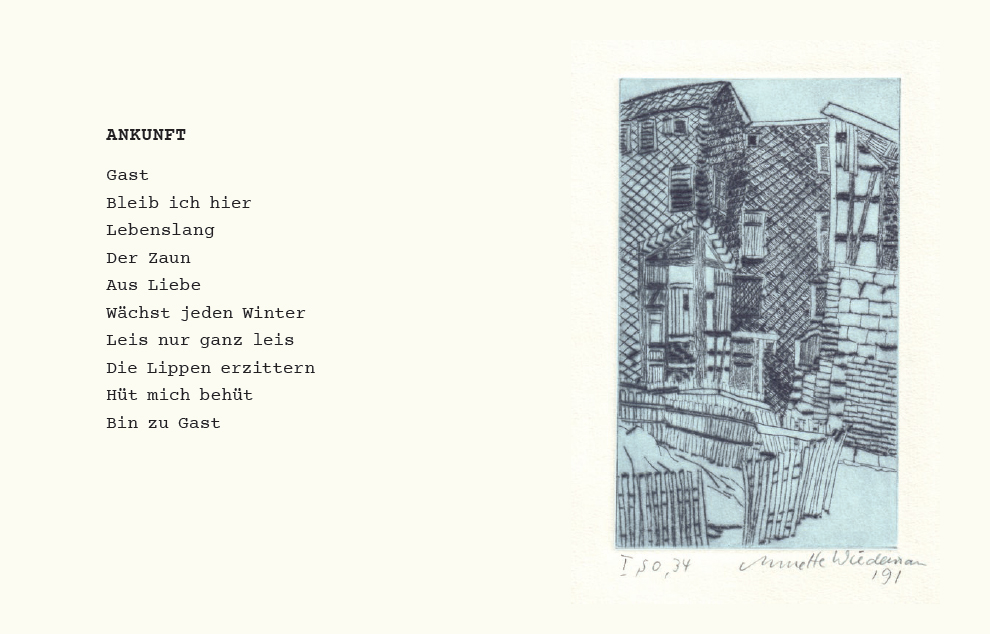
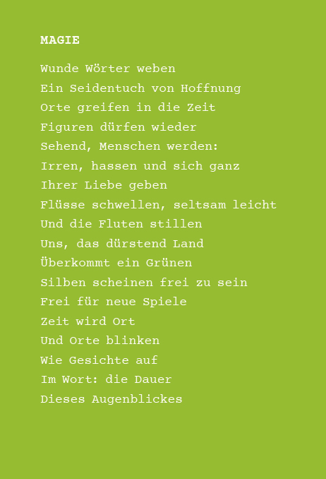

.jpg)
Im November 2025 entschloss sich Holger Uske, einen Lyrikband herauszugeben, der schon 1986 bei einem Verlag der DDR eingereicht wurde. Es hätte sein erstes Buch werden können. Es blieb damals ungedruckt. In einem Geleitwort schreibt der Autor dazu:
Vom alten und neuen Widerstehen
Warum dieses Buch? Normalerweise stellt sich am Anfang eines Buches eine solche Frage nicht. Der Autor legt es in die Hände der Leser. Mögen die entscheiden, ob Bedarf daran ist. Bei diesem Buch ist es anders. Das Manuskript dazu wurde Mitte November 1986 beim Union Verlag Berlin eingereicht. Eine etwa zweijährige Verlagsarbeit zwischen der Lektorin Dorothea Matschuk und dem Autor schloss sich an. Dann kam es zu Geschehnissen, die untypisch für die DDR mit (finanziellen) Fördermaßnahmen des Bezirkes Suhl, vorgeschlagen vom damaligen Schriftstellerverbands-Vorsitzenden Landolf Scherzer, zusammenhingen und zu einer daraus folgernden Befangenheitserklärung der Lektorin führten – was die Zusammenarbeit beendete. Ich habe in den mir zugänglich gemachten Akten des noch bis 1987 gegen mich laufenden Operativen Vorgangs „Alternative" der Staatssicherheit der DDR wegen meiner (nebenberuflichen) literarischen Arbeit nichts dazu gefunden. Im Juli 1990, die D-Mark war eben eingeführt worden, erhielt ich das Manuskript zurück. Es war nicht zur Veröffentlichung gelangt.
Welche Wirkung hätte dieses Buch erzielen können in den Jahren bis hin zur Friedlichen Revolution? Diese Frage ist eigentlich müßig. Denn kann Literatur überhaupt gesellschaftliche Prozesse beeinflussen? Heute, 2025, mitten in einer rapiden Änderung des Leseverhaltens, wird es sicher andere Antworten geben als damals. Die Kraft des Wortes ist im Schwinden. Als mir das Manuskript jüngst wieder in die Hände fiel, war ich selbst von manchen meiner Texte überrascht. Die hatte ich wirklich mit eingereicht? Freunde unterstützten mich nun, mit fast 40-jähriger Verspätung das Manuskript als ansehnliches Büchlein ans Licht der Welt zu bringen: Andreas Kuhrt mit seiner Gestaltungskunst und Annette Wiedemann durch ihre Erlaubnis, Arbeiten von ihr zu nutzen. Grafiken von ihr hatte ich schon 1986 mit zum Verlag gegeben. Die nun ausgewählten stammen aus Kalendern mit Suhler Motiven von 1991, als das Stadtbild noch tiefe Spuren der DDR-Zeit aufwies. Der Text allerdings blieb unverändert, bis hin zur Schreibweise von damals.
Ich hoffe, dass dieses lediglich in einer Kleinstauflage gedruckte Büchlein mehr ist als nur ein Zeitzeugnis. Denn es erzählt auch vom (beinahe) Möglichen von einst und vom damals wie heute nötigen mutigen Widerspruchsgeist, um auch geistig zu überleben. Der „Wind" im „Wald" ist noch immer – oder längst wieder zum Sprung bereit.
(Holger Uske, Geleitwort)


AUFBRUCH DES WINDES
Hinter Nebelbänken
Versammelt ist im Wald
Der Wind, zum Sprung bereit
Doch kaum ein Hauch hat Aussicht
Weites Land zu sehn
Riesenräder, Mühlen
Glocken Dunst wie Steine
Sperren ab den Weg
Schwer, dies stumme Beben
Windbruch, so schrein sie schon
Seiner ersten Übung nach
Und wissen weiter nichts
Da sichs wieder ballt
Vor-Boten brechen auf
Dunkel wird die Luft
Sturm: Aufstand der Seelen
Sturm: Verhängnis Gewissen
Hei!, wie nun der Staub
All die Straßen peitscht
Hei!, was eben galt
Wird Windsbraut sein
Herrlich, wie die Scheiben
Zittern, klirren: Angst
Wo Macht war noch
Im letzten Augenblick
Frontberichte melden:
Alter Staub nur ist's
Staub, denn unsichtbar
Nistet es in Ohren
Lässt die Stille gelln
Setzt sich in die Augen
Welch ein Wischen rings
Hebt an, als ob schon Nebel
Zwischen allen Bänken wär
Im Walde aber, sagen sie
Ging der Wind verloren
RUF
Abendkühle so sacht verkündet
Nächtlicher Bote Schweigen findet
Nachbarn blaß. Die Angst: Allein
Am Fenster blind mein Ich und bloß
Nicht Licht noch Wärme, die ich kos
Nur Worte trägt ein Wind zum Stein
Aus Bildern falt ich so mein Haus
Nehm Zweifel mit und Hoffen: baus
Neben deinem. Komm. Zieh ein